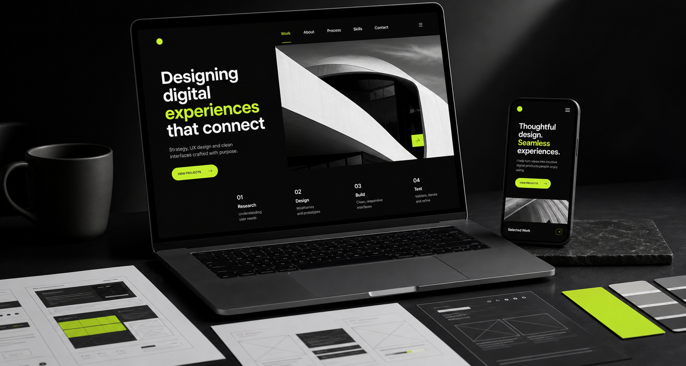
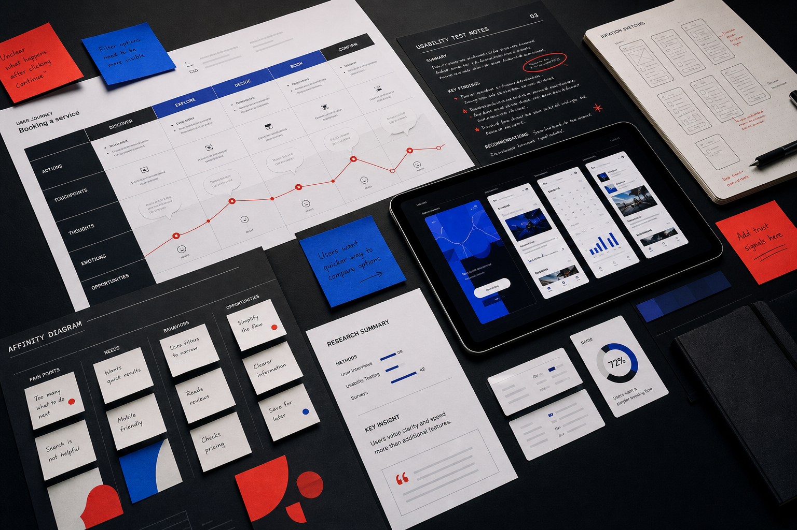
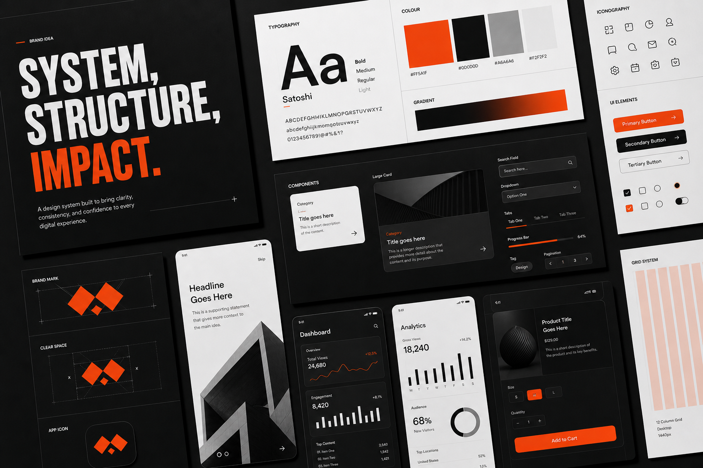

01 / Web Design
Responsive Experience System
A polished web concept focused on layout structure, responsive behaviour, accessible navigation, and strong visual hierarchy.

Web & UX Design Graduate
I combine research, visual hierarchy, responsive web design, and accessibility to build interfaces that feel sharp, useful, and easy to navigate.
View selected workBehind the Designs
I am building a portfolio around thoughtful UX decisions, strong visual presentation, and evidence that I can move from messy ideas to polished, usable screens.
Selected Work

01 / Web Design
A polished web concept focused on layout structure, responsive behaviour, accessible navigation, and strong visual hierarchy.

02 / UX Research
Turning research findings into calmer user flows, clearer content, and a prototype designed around student needs.

03 / Visual Systems
A visual identity and UI kit exploring typography, colour contrast, components, consistency, and practical implementation.
Process
Define the audience, problem, constraints, and success criteria before designing.
Map user journeys, flows, content hierarchy, and interaction states.
Create responsive interfaces that can be tested, refined, and explained clearly.
Use feedback, accessibility checks, and visual polish to strengthen the final design.
About Me
I recently graduated with a degree in Web and UX Design. My work sits between UX research, interface design, front-end implementation, and visual storytelling.
I care about designing experiences that are easy to follow, visually engaging, and built around real user needs. I am now looking for junior UX, web design, product design, or front-end opportunities where I can keep learning and contribute sharp, considered work.
Get in Touch